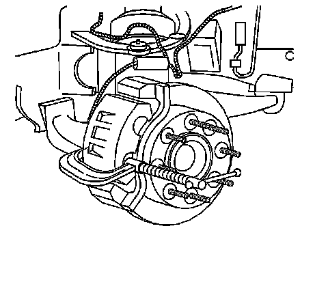
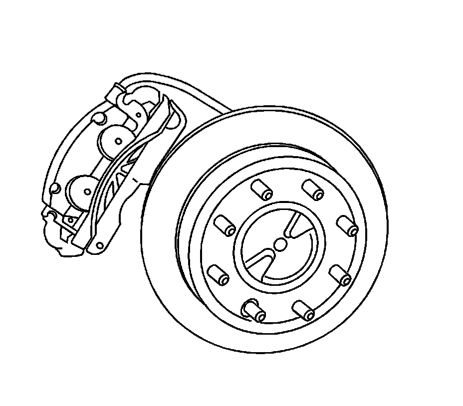
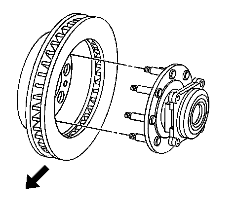

Front Brake Rotor Replacement (2500 Series)
Front Brake Rotor Replacement (2500 Series)
Tools Required
J 42450-A Wheel Hub Resurfacing Kit
Caution: Refer to Brake Dust Caution.
Removal Procedure
1. Inspect the fluid level in the brake master cylinder reservoir.
2. If the brake fluid level is midway between the maximum-full point and the minimum allowable level, no brake fluid needs to be removed from the reservoir before proceeding.
3. If the brake fluid level is higher than midway between the maximum-full point and the minimum allowable level, remove brake fluid to the midway point before proceeding.
4. Raise and support the vehicle. Refer to Lifting and Jacking the Vehicle.
5. Remove the tire and wheel assembly.
6. If installing the original brake rotor, mark the relationship of the brake rotor to the hub.

7. Compress the brake caliper pistons.
1. Install 2 large C-clamps over the top of the caliper housing and against the back of the outboard brake pad.
2. Slowly tighten the C-clamps until the caliper pistons are pushed completely into the caliper bores.
3. Remove the C-clamps from the caliper.

Notice: Support the brake caliper with heavy mechanic wire, or equivalent, whenever it is separated from its mount and the hydraulic flexible brake hose is still connected. Failure to support the caliper in this manner will cause the flexible brake hose to bear the weight of the caliper, which may cause damage to the brake hose and in turn may cause a brake fluid leak.
Important: Remove the brake caliper and bracket as a single unit. It is not necessary to separate them.
8. Remove the 2 brake caliper bracket mounting bolts.
9. Remove the caliper and bracket assembly and support with heavy mechanics wire or equivalent.
10. Remove the rotor retaining push nuts from the wheel studs, if applicable.
11. It may be necessary to strike the end of the hub or the rotor with a deadblow hammer to separate the rotor from the hub.
1. Install the wheel nuts on the wheel studs to protect the ends of the wheel studs.
2. Strike the brake rotor between the wheel studs to separate the brake rotor from the wheel hub.
3. Remove the wheel nuts.

12. Remove the brake rotor.
13. If the brake does not separate from the wheel hub, perform the following steps.
^ Clean all the surface areas and the threaded holes of contamination.
^ Generously apply penetrating oil or the equivalent to the hub/rotor area.
^ Insert 2 M10 x 1.5 bolts into the threaded holes of the rotor.
^ Tighten both bolts evenly to force the rotor from the hub.
Installation Procedure
Notice: Any new rotor must have the protective coating removed from the friction surfaces before being placed in service. Remove the protective coating using denatured alcohol or an equivalent, and wipe the surface clean with clean cloths. Do not use gasoline, kerosene, or other oil base solvents which may leave an oily residue. This residue is damaging to the brake lining and is flammable.
Important: Whenever the brake rotor has been separated from the hub/axle flange, any rust or contaminants should be cleaned from the hub/axle flange and the brake rotor mating surfaces. Failure to do this may result in excessive assembled lateral runout (LRO) of the brake rotor, which could lead to brake pulsation.
1. Use the J 42450-A to clean all rust and contaminants from the mating surface of the hub flange.
2. Inspect the mating surfaces of the hub/axle flange and the rotor to ensure that there are no foreign particles or debris remaining.
Important: If the rotor was removed using the jack screw method you must ensure that the hub flange is free of nicks or marks caused by this procedure. Remove all raised nicks or marks before installing the rotor.
3. Align the rotor to its original position on the hub, if applicable, and install the rotor.
4. If the brake rotor was removed and installed as part of a brake system repair, measure the assembled lateral runout (LRO) of the brake rotor to ensure optimum performance of the disc brakes. Refer to Brake Rotor Assembled Lateral Runout Measurement.
5. If the brake rotor assembled LRO measurement exceeds the specification, bring the LRO to within specifications. Refer to Brake Rotor Assembled Lateral Runout Correction.
6. Install the brake caliper and bracket assembly.
7. Perform the following procedure before installing the caliper bracket mounting bolts.
1. Remove all traces of the original adhesive patch.
2. Clean the threads of the bolts with brake parts cleaner or equivalent and allow to dry.
3. Apply Threadlocker GM P/N 12345493 (Canadian P/N 10953488) to the threads of the bolts.
Notice: Refer to Fastener Notice.
8. Install the brake caliper bracket mounting bolts.
Tighten the bolts to 300 N.m (221 lb ft).
9. Install the tire and wheel assembly.
10. Lower the vehicle.
11. With the engine OFF, gradually apply the brake pedal to approximately 2/3 of its travel distance.
12. Slowly release the brake pedal.
13. Wait 15 seconds, then repeat steps 11-12 until a firm pedal is obtained to properly seat the brake caliper pistons and the brake pads.
14. Fill the master cylinder reservoir to the proper level with clean brake fluid. Refer to Master Cylinder Reservoir Filling.